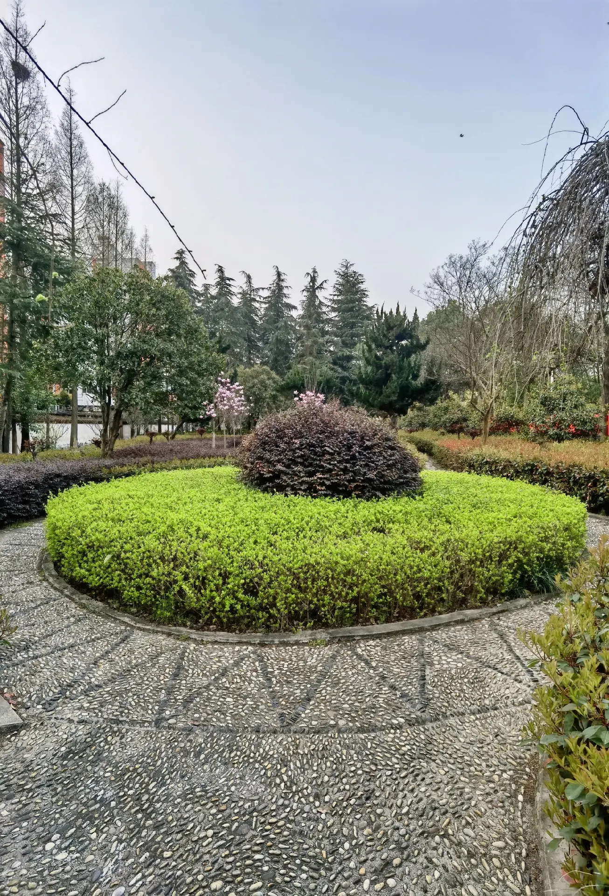

A corner of campus
春日里的校园一隅
花木、绿荫和熟悉的小路，都是校园记忆的一部分。这张图片取自抖音公开图文作品，记录的是作者发布时的校园景色，不代表当前实景。百度百科条目还介绍过莲花池、月牙池、植物园、静思园和时空长廊等校园景观，具体以当前校园实际为准。
图片来源：抖音用户 滒滒君晟，作品《固高校园春色——醉美春光三月里！》（2022-03-15）。查看原帖与作者信息 ↗
一张来自同学分享的校园春日记录。图片保留作者署名和原帖入口，更多内容请到抖音原帖查看。

花木、绿荫和熟悉的小路，都是校园记忆的一部分。这张图片取自抖音公开图文作品，记录的是作者发布时的校园景色，不代表当前实景。百度百科条目还介绍过莲花池、月牙池、植物园、静思园和时空长廊等校园景观，具体以当前校园实际为准。
只放可以追溯来源的基础信息。遇到地址、办学安排或招生政策等重要事项，请打开原始发布页面核对。
根据固始县政府公开资料，学校位于固始县城关镇王审知大道中段。本站引用的校训、地址和办学理念均附公开来源链接。
以下沿革根据百度百科词条整理为简要时间线；早期校史按词条所列阶段呈现，详细情况请以学校正式发布的校史资料为准。
固始县第一初级中学开始招收高中班，学校名称也随办学层次调整。
固始县高级中学校舍开始筹建；同年秋季，高中部迁入并正式建校。
学校被确定为信阳地区重点高中。
新校区建成并启用，学校曾以“固始慈济高级中学”等名称办学。
获评首批河南省示范性普通高中。
恢复“固始县高级中学”现名，并组建高中教育集团。
学校校训为“厚德、博学、明志、笃行”，办学理念为“尊重教育规律，以学生发展为本”。
百科词条介绍了名师讲坛、青蓝工程、校本课程、学生社团、阳光大课间及传统文化主题活动等校园生活。具体活动会随学年安排更新。
资料来源：百度百科：固始县高级中学、固始县人民政府公开资料。本站仅作摘要介绍；校史细节、办学安排如有差异，以学校最新官方资料为准。
以下链接跳转到原发布页面。本站仅做导航，不代替原文，也不把转载内容写成学校公告。
报道介绍了固始县高级中学师生代表前往秀水公园开展祭英烈活动。来源页面标注来源为固始县高级中学。
阅读原报道 ↗信阳市教育体育局专题刊载固始县高级中学校长张文友的办学文章，介绍学校发展思路与育人理念。
阅读市教体局原文 ↗固始县政府网站发布的考试报道。有关考试日程、考点和录取政策，请以教育部门最新通知为准。
查看政府原文 ↗以下作品来自抖音站内搜索结果。卡片只整理标题、作者和原链接，点击后在抖音查看。
这是学生个人搭建的非官方网站。本站信息用于同学交流与公开资料导航，不发布校方通知，不收集或展示未经同意的学生个人信息。